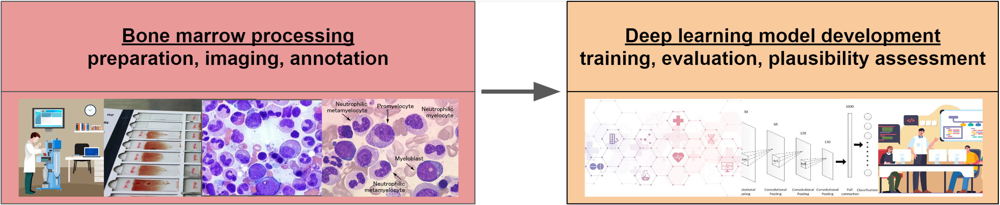
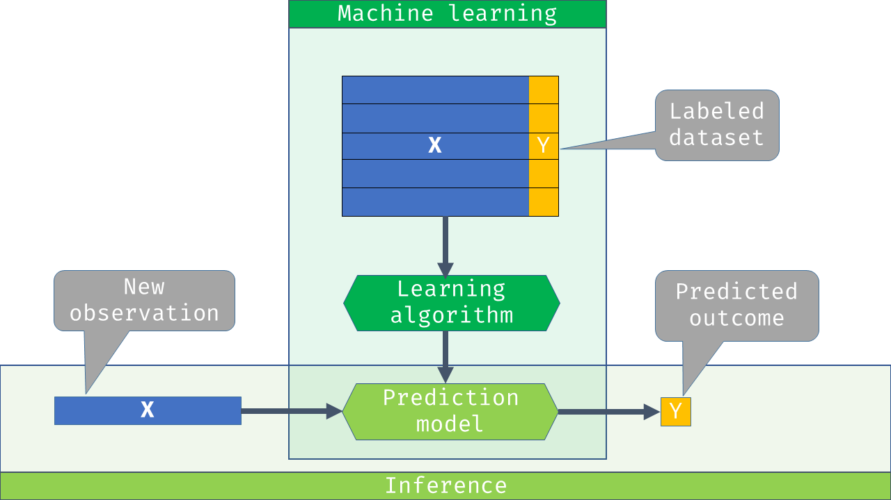
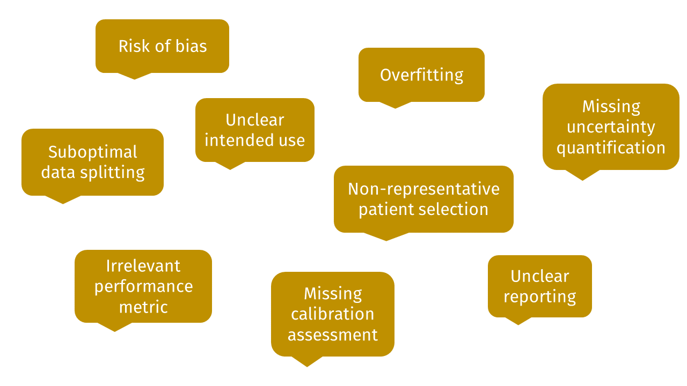

flowchart TB ML(Machine learning) --> UL(Unsupervised learning) ML --> SL(Supervised learning) ML --> RL(Reinforcement learning) ML --> dots1(...) SL --> BC(binary classification) SL --> MCC(multi-class classification) SL --> MLC(multi-label classification) SL --> TTE(time-to-event analysis) SL --> REG(regression) SL --> dots2(...)
Evaluating machine learning and artificial intelligence algorithms
Data Train course 2025
Max Westphal
Fraunhofer Institute for Digital Medicine MEVIS
2025-09-16
Introduction
Scope
- Important topics (50-80%):
- Core concepts
- Performance metrics
- Data splitting
- Statistical analysis
- Further considerations (20-50%)
- Practical aspects
- topics not covered in this course…
- Learning goal:
- Be able to identify common pitfalls for your ML problem…
- … and find suitable (evaluation) solutions.
Housekeeping
- Slides & reproducible code
- Breaks
- Lunch breaks (60-75 minutes): around noon
- Coffee breaks (around 15 minutes): flexible
- Interactive summaries
- at the end of each section
- Questions
- at the end of each section
Housekeeping
- Hands-on sessions
- best case: apply concepts/methods to your own ML problem(s)
- no own ML problem(s) (yet)? We brought some exercises…
- coding can be done in any programming language
- support and (partial) sample solutions in R and Python
- R and Python versions are similar, but not identical
- we encourage you to work in small groups, if you want to
- Be curious/active!
- Have fun!
Agenda (Day 1)
- Introduction
- Core Concepts \(\longrightarrow\) \(\longrightarrow\)
- Performance metrics \(\longrightarrow\) \(\longrightarrow\)
- Lunch break
- Hands-on session: ML basics and performance metrics
- Data splitting \(\longrightarrow\) \(\longrightarrow\)
- Hands-on session: data splitting
Agenda (Day 2)
- Statistical inference for performance measures (Werner Brannath)
- A brief introduction to fairness assessment (Werner Brannath)
- Statistical analysis for model evaluation \(\longrightarrow\) \(\longrightarrow\)
- Lunch break
- Practical aspects \(\longrightarrow\) \(\longrightarrow\)
- Hands-on session: Statistical analysis for model evaluation
- Wrap-up
Core Concepts
Example project: KIPeriOP
Example project: BMDeep

Example project: CTG
2126 fetal cardiotocograms (CTGs) were automatically processed and the respective diagnostic features measured. The CTGs were also classified by three expert obstetricians and a consensus classification label assigned to each of them. Classification was both with respect to a morphologic pattern (A, B, C. …) and to a fetal state (N, S, P). Therefore the dataset can be used either for 10-class or 3-class experiments
- The dataset consists of 2070 observations of 23 features.
- In the following, we consider the binary classification task {suspect, pathological} vs. normal
Example project: CTG
- “Cardiotocography (CTG) is a technique used to monitor the fetal heartbeat and uterine contractions during pregnancy and labour. The machine used to perform the monitoring is called a cardiotocograph.”
- “CTG monitoring is widely used to assess fetal well-being by identifying babies at risk of hypoxia (lack of oxygen). CTG is mainly used during labour.”
- Figure: “The display of a cardiotocograph. The fetal heartbeat is shown in orange, uterine contractions are shown in green, and the small green numbers (lower right) show the mother’s heartbeat.”
Supervised machine learning

Supervised machine learning
Task types in supervised learning
- Focus in this course: binary classification
ML workflow
Types of evaluation studies
- This course is about evaluation studies assessing (some sort of) performance of prediction models or algorithms
- This course is not about assessing the downstream / real-world (clinical) utility
- Furthermore, we may distinguish between:
- internal validation: development and evaluation take place in different samples from the same population (in-distrubution)
- external validation: an independent evaluation (different time and/or reseach group)
- internal-external validation: during development, we try to assess the generalizability (transferability) to another context
Applied ML: “standard” pipeline
ML terminology is a mess
- Training, aka
- Development
- Derivation
- Learning
- Tuning, aka
- Validation
- Development
- Testing, aka
- Validation
- Evaluation
Bias variance trade-off
Bias variance trade-off in ML
Bias variance trade-off in ML (modern)
Selection-induced bias
Selection-induced bias
No-free-lunch theorem
No single model (architecture) works best in all possible scenarios.
- Solutions
- extensive experiments (model comparison and hyperparameter tuning)
- inductive bias (prior knowledge)
- a mixture of both
Aleatoric and epistemic uncertainty in machine learning
- “Aleatoric (aka statistical) uncertainty refers to the notion of randomness, that is, the variability in the outcome of an experiment which is due to inherently random effects.”
- “Epistemic (aka systematic) uncertainty refers to uncertainty caused by a lack of knowledge, i.e., to the epistemic state of the agent.”
ML pitfalls: guidance for evaluation
ML pitfalls: overall guidance
ML pitfalls: empirical assessment

ML pitfalls: overview

Interactive summary
Q1: What are typical pitfalls in ML evaluation studies?
- inadequate data splitting
- ignoring temporal dependencies
- only evaluate a single model once on the test data
- combined model tuning and evaluation on the test data
Q1: What are typical pitfalls in ML evaluation studies?
- inadequate data splitting
- ignoring temporal dependencies
- only evaluate a single model once on the test data
- combined model tuning and evaluation on the test data
Q2: Three datasets are needed in the standard ML pipeline to counter and/or diagnose …
- overfitting
- underfitting
- high label noise
- selection-induced bias
Q2: Three datasets are needed in the standard ML pipeline to counter and/or diagnose …
- overfitting
- underfitting
- high label noise
- selection-induced bias
Q3: What types of validation do exist?
- internal
- internal-external
- external
- external-internal
Q3: What types of validation do exist?
- internal
- internal-external
- external
- external-internal
Q4: What are valid ML tasks?
- multi-class regression
- multi-label classification
- time-to-event analysis
- binary classification
Q4: What are valid ML tasks?
- multi-class regression
- multi-label classification
- time-to-event analysis
- binary classification
Q5: When comparing multiple models on the same dataset, the severity of selection-induced bias…
- increases with similarity of model predictions
- increases with the number of models
- increases with spread of true performances
- increases with number of observations
Q5: When comparing multiple models on the same dataset, the severity of selection-induced bias…
- increases with similarity of model predictions
- increases with the number of models
- increases with spread of true performances
- increases with number of observations
Questions
Performance metrics
Performance dimensions
- Discrimintation: can the model distinguish between the target classes?
- Calibration: are probability prediction accurate?
- Fairness: is discrimination similar in important subgroups?
- Uncertainty quantification: how good is the coverage of prediction intervals?
- Explainability: usually assessed in user studies…
Metric choice
- A deliberate metric choice is very important for a successful ML project.
- a sensible metric supports/guides development
- an unreasonable metric hinders development
- What is an optimal solution worth, if it is optimal w.r.t. to a suboptimal metric?
- Finding an adequate metric can be time consuming
- should be done early on (before any developments)
- should be based on discussion with important stakeholders (e.g. potential users)
- “Standard” / “default” metrics in the field:
- usually a good idea to report as well (secondary)
- often not sufficient as primary / sole metric
- Multiple interesting metrics?
- development usually facilitated if there is a clear decision rule how to rank models (e.g. primary metric)
Metrics: R packages
- Metrics: https://CRAN.R-project.org/package=Metrics (2018-07-09)
- ModelMetrics: https://CRAN.R-project.org/package=ModelMetrics ( 2020-03-17)
- metrica: https://CRAN.R-project.org/package=metrica (2023-04-14)
- SurvMetrics: https://CRAN.R-project.org/package=SurvMetrics (2022-09-03)
- MetricsWeighted: https://CRAN.R-project.org/package=Metrics (2023-06-05)
Binary classification: confusion matrix
Evaluation data for CTG example (train-tune-test)
row_ids truth response prob.suspect prob.normal
1 3 normal normal 0.42001441 0.5799856
2 19 normal normal 0.00000000 1.0000000
3 28 normal normal 0.03574335 0.9642566
4 31 normal normal 0.04821049 0.9517895
5 47 normal normal 0.00000000 1.0000000
6 48 normal normal 0.00000000 1.0000000Binary classification: confusion matrix
caret::confusionMatrix(reference = data_eval_ttt_1$truth,
data = data_eval_ttt_1$response,
positive = "suspect")Confusion Matrix and Statistics
Reference
Prediction suspect normal
suspect 75 3
normal 15 319
Accuracy : 0.9563
95% CI : (0.9318, 0.9739)
No Information Rate : 0.7816
P-Value [Acc > NIR] : < 2.2e-16
Kappa : 0.8656
Mcnemar's Test P-Value : 0.009522
Sensitivity : 0.8333
Specificity : 0.9907
Pos Pred Value : 0.9615
Neg Pred Value : 0.9551
Prevalence : 0.2184
Detection Rate : 0.1820
Detection Prevalence : 0.1893
Balanced Accuracy : 0.9120
'Positive' Class : suspect
Binary classification: discrimination metrics
- Accuracy: Probability of correct classification (actual \(=\) predicted)
- Sensitivity: Accuracy in positive class (cases, diseased, 1, TRUE)
- Specificity: Accuracy in negative class (controls, healthy, 0, FALSE)
- PPV: Accuracy in positive predictions
- NPV: Accuracy in negative predictions
- Balanced accuracy: Average of sensitivity and specificiy
Binary classification: weighted accuracy
a <- data_eval_ttt_1$truth == "suspect"
p <- data_eval_ttt_1$response == "suspect"
Metrics::accuracy(actual = a, predicted = p)[1] 0.9563107Binary classification: Risk prediction
- Binary classifier which not only predict the target variable (TRUE vs. FALSE), but also a probability of an event (TRUE), may also be called risk prediction models
- Often fundamental requirement in clinical predictive modelling
- As domain experts shall usually be supported (not replaced) by ML models / algorithms, a predicted risk can be much more informative and interpretable compared to a model only capable of predicting class labels
Receiver operating characteristic (ROC)

Receiver operating characteristic (ROC)

Receiver operating characteristic (ROC)
Binary classification: Area under the curve (AUC)
- Area under the (ROC) curve (also “c-statistic”, “concordance statistic”)
- Interpretation: probability that for a randomly selected pair of patients, the diseased patient (true positive class) has a higher predicted risk compared to the healthy patient (true negative class).
- Partial AUC: restrict specificity range
- Many different implementations (smoothed, with CI)
Binary classification: Area under the curve (AUC)
Binary classification: calibration plot
Binary classification: calibration plot
Binary classification: calibration plot
Binary classification: calibration metrics
- Expected calibration error (ECE)
- Maximum calibration error (MCE)
- Root mean squared error (from diagonal) (RSME)
- Calibration intercept (calibration-in-the-large)
- Calibration slope
Binary classification: calibration metrics
a <- data_eval_ttt_1$truth == "suspect"
p <- data_eval_ttt_1$prob.suspect
CalibratR::getECE(actual = a, predicted=p, n_bins=10)[1] 0.02858147Binary classification: calibration metrics
Calibration slope and intercept
Calibration slope and intercept
Binary classification: fairness - overview
- Predictive rate parity
- False positive rate parity
- False negative rate parity
- Accuracy parity
- Negative predictive value parity
- Specificity parity
- ROC AUC parity
- …
Multi-class classification
- In principle, performance measures for binary classification can be generalized to multi-class problems by considering multiple relevant binary classification tasks, e.g.
- one-vs-rest
- one-vs-one
- This can result in many performance metrics to calculate and interpret and thus make ranking of models more difficult
- Potential solutions
- aggregation of metrics to single (or few) overall metric, e.g. via weighting (by cost)
- specialized metrics for multiclass problems
Multi-class classification: Confusion matrix
set.seed(123)
a <- rep(letters[1:5], times= (1:5)*20)
p <- sample(a, length(a))
caret::confusionMatrix(data = as.factor(p), reference=as.factor(a))Confusion Matrix and Statistics
Reference
Prediction a b c d e
a 2 4 2 5 7
b 1 7 9 11 12
c 4 9 14 15 18
d 5 6 20 22 27
e 8 14 15 27 36
Overall Statistics
Accuracy : 0.27
95% CI : (0.2206, 0.324)
No Information Rate : 0.3333
P-Value [Acc > NIR] : 0.9924
Kappa : 0.0338
Mcnemar's Test P-Value : 0.8813
Statistics by Class:
Class: a Class: b Class: c Class: d Class: e
Sensitivity 0.100000 0.17500 0.23333 0.27500 0.3600
Specificity 0.935714 0.87308 0.80833 0.73636 0.6800
Pos Pred Value 0.100000 0.17500 0.23333 0.27500 0.3600
Neg Pred Value 0.935714 0.87308 0.80833 0.73636 0.6800
Prevalence 0.066667 0.13333 0.20000 0.26667 0.3333
Detection Rate 0.006667 0.02333 0.04667 0.07333 0.1200
Detection Prevalence 0.066667 0.13333 0.20000 0.26667 0.3333
Balanced Accuracy 0.517857 0.52404 0.52083 0.50568 0.5200Multi-class classification: cost-sensitive metrics
- Different errors can be weighted by (relative) missclassification costs and then be aggregated to a single accuracy measure
- This reduces the complexity of (interpreting) evaluation results
- This a in particular relevant when the number of classes is large
- In the BMDeep project, the cost specification for leukemia subtype prediction is simplified by considering the (coarser) task of predicting the (guideline) recommended treatment
Multi-class classification: AUC
- The AUC can be generalized to multi-class problems in a simple fashion, by considering the mean of multiple binary AUCs (Hand & Till, 2001)
- See e.g.
?pROC::multiclass.roc()in R, however fewer features available (w.r.t. visualization, uncertainty quantification) - A “true” multi-class AUC was developed by Kleiman & Page (2019)
Regression: loss functions

Regression: loss functions
- Symmetric loss functions used to define frequently used regression performance metrics, e.g.
- mean squared error
- mean absolute error
- For some regression tasks, custom performance metrics (based on asymmetric loss functions) may be more suitable
- for details, see references below
Survival analysis: overview
Mean absolute error (and other regression metrics)
- Not recommended as censoring is ignored
Concordance index/measure
- probability that of a randomly selected pair of patients, the patient with the shorter survival time has the higher predicted risk.
- most freuqently used
- several versions do exist
(Integrated) Brier score
Calibration slope
Metric choice
- A deliberate metric choice is very important for a successful ML project.
- a sensible metric supports/guides development
- an unreasonable metric hinders development
- What is an optimal solution worth, if it is optimal w.r.t. to a suboptimal metric?
- Finding an adequate metric can be time consuming
- should be done early on (before any developments)
- should be based on discussion with important stakeholders (e.g. potential users)
- “Standard” / “default” metrics in the field:
- usually a good idea to report as well (secondary)
- often not sufficient as primary / sole metric
- Multiple interesting metrics?
- development usually facilitated if there is a clear decision rule how to rank models (e.g. primary metric)
Interactive summary
Q1: What is displayed in the confusion matrix?
- actual labels vs. predicted labels
- predicted labels vs. estimated probabilities
- actual labels vs. observed frequencies
- observed frequencies vs. estimated probabilities
Q1: What is displayed in the confusion matrix?
- actual labels vs. predicted labels
- predicted labels vs. estimated probabilities
- actual labels vs. observed frequencies
- observed frequencies vs. estimated probabilities
Q2: Which metrics are useful to assess discrimination for any binary classifier?
- specificity
- mean squared error
- positive predictive value
- area under the curve
Q2: Which metrics are useful to assess discrimination for any binary classifier?
- specificity
- mean squared error
- positive predictive value
- area under the curve
Q3: Calibration assesses the relation between…
- predicted probabilities and the prevalence
- predicted probabilities and observed class frequencies
- predicted class labels and the majority class
- predicted class labels and the minority class
Q3: Calibration assesses the relation between…
- predicted probabilities and the prevalence
- predicted probabilities and observed class frequencies
- predicted class labels and the majority class
- predicted class labels and the minority class
Q4: Which of the following statements are true?
- only sensitivity or specificity should be considered, not both
- balanced accuracy can be calculated from the confusing matrix
- overall accuracy is independent of class prevalences
- all classification metrics can be calculated from the confusion matrix
Q4: Which of the following statements are true?
- only sensitivity or specificity should be considered, not both
- balanced accuracy can be calculated from the confusing matrix
- overall accuracy is independent of class prevalences
- all classification metrics can be calculated from the confusion matrix
Q5: Which calibration metrics are based on the calibration plot?
- Expected calibration error
- Maximum calibration error
- Root mean squared error
- Calibration slope
Q5: Which calibration metrics are based on the calibration plot?
- Expected calibration error
- Maximum calibration error
- Root mean squared error
- Calibration slope
Questions
Break
Hands-on session
Hands-on session: ML basics and performance metrics
- Answer the following questions for your own ML problem(s):
- What ML task type do you want to solve?
- What are standard metrics in your field?
- What metrics are relevant for your specific problem? Why?
- Which metric is most relevant?
- Find a suitable implementation for each relevant metric?
- No own ML problem(s) (yet)?
- You can work through the tasks of exercise 1…
Data splitting
Motivation: overfitting
Motivation: selection-induced bias
Overview of approaches
- Train-tune-test split
- Cross-validation (CV)
- Bootstrapping
- Stratified splitting
- Grouped (blocked) splitting
- Nested splitting (nested CV)
- Special variants (e.g. for time-series data)
The “default” train-tune-test split
The “default” train-tune-test split
- (Was used so far in the previous section)
- Simple to implement
- Low computational effort
- Simple statistical inference
- Target: conditional performance, either of…
- model trained on “train” dataset
- model trained on “train” & “tune” datasets combined
Cross-validation (+ independent test set)
Cross-validation (+ independent test set)
- Cross-validation (cross-tuning):
- unconditional performance assessed
- increased computational burden (by number of folds \(K\))
- reduces danger of bad model selection for small samples
- Is the independent test set really required?
- It depends:
- Only model comparison needed: no
- Only performance assessment: no
- Both needed: yes, as (CV based) performance estimate of (CV) selected model can still be biased
- Solution: Nested cross-validation
Nested cross-validation

Computational complexity
- Train-tune-test: \(1\)
- K-fold CV: \(K\) (number of folds)
- Nested CV: \(K_{\text{inner}}\ \cdot K_{\text{outer}}\)
- Bootstrap: \(B\) (number of bootstrap repetitions)
- R-repeated K-fold CV: \(R \cdot K\)
- Leave-one-out CV: \(n_{\text{obs}}\) (number of observations)
General recommendations
- Trade off of between complexity (implementation, computation, analysis) and sample efficiency
- Large n: train-tune-test
- simple (implementation, computation, analysis)
- Small n: (nested) CV
- higher compute due to repeated sampling/training
- Optimal splitting (number of folds, ratio)
- no general accepted solution
- simulation…
- power calculation can guide minimal test set size
Splitting variants
- Stratification: should the distribution of certain variables be (approximately) equal in all datasets?
- In particular relevant for the outcome variable (classification)
- No/low costs, medium/high reward
- Grouping (also: blocking): Very relevant for hierarchical data
- Relevant question: What is the observational unit of your study?
- a (e.g. bone marrow) cell
- an image (= a collection of cells)
- a patient (= potentially multiple images)
- If a lower hierarchy level is chosen, then splitting should be grouped by highest level
There is more to it…
- Almost all data splitting techniques so far relied on random partitioning or sub-sampling
- For non-IID observations, e.g. time-series data, special data splitting methods are required (Schnaubelt, 2019)
- Question: What quantity are we really interested in?
- Observation: “generalization performance” is usually not defined very precisely in ML
Generalizability vs. transferability
Estimand framework
Interactive summary
Q1: What is a commonly used data splitting technique?
- train-validation-test
- train-tune-test
- double validation
- cross-validation
Q1: What is a commonly used data splitting technique?
- train-validation-test
- train-tune-test
- double validation
- cross-validation
Q2: Which data splitting techniques are rarely used due to very high computational effort for model training?
- 5-fold cross-validation
- bootstrap
- leave-one-out cross-validation
- train-tune-test
Q2: Which data splitting techniques are rarely used due to very high computational effort for model training?
- 5-fold cross-validation
- bootstrap
- leave-one-out cross-validation
- train-tune-test
Q3: For large datasets, the classical “train-tune-test” split can be recommended due to…
- simple statistical analysis
- utilization of all observations for testing
- being the default method in many packages
- minimal computational effort
Q3: For large datasets, the classical “train-tune-test” split can be recommended due to…
- simple statistical analysis
- utilization of all observations for testing
- being the default method in many packages
- minimal computational effort
Q4: For small datasets, …
- a proper model comparison and evaluation is usually simpler
- nested data splitting techniques have increased relevance
- no data should be wasted for method evaluation
- the importance of appropirate study planning is increased
Q4: For small datasets, …
- a proper model comparison and evaluation is usually simpler
- nested data splitting techniques have increased relevance
- no data should be wasted for method evaluation
- the importance of appropirate study planning is increased
Q5: Which of the following statements are true?
- stratification is recommended for hierarchical data structures
- grouping is recommended for hierarchical data structures
- stratification is recommended to retain the class distribution
- grouping is recommended to retain the class distribution
Q5: Which of the following statements are true?
- stratification is recommended for hierarchical data structures
- grouping is recommended for hierarchical data structures
- stratification is recommended to retain the class distribution
- grouping is recommended to retain the class distribution
Questions
Hands-on session
Hands-on session: Data splitting
- Answer the following questions for your own ML problem(s):
- How many observations do you have access to (in the future)?
- Is the dataset a single sample or a collection of samples?
- What are the computational constraints for data splitting?
- What is an appropriate data splitting scheme? Why?
- Should you use grouping or stratification?
- Are you aiming for internal, external or internal-external validation?
- No own ML problem(s) (yet)?
- You can work through the tasks of exercise 2…
Recap & questions
Statistical analysis
Goals of statistical inference
Estimation
Uncertainty quantification
- standard error
- confidence interval
Decision making
- hypothesis testing
Overview
Classical (frequentist) inference
Nonparametric methods
- bootstrap
- hierarchical bootstrap
Complex procedures
- mixed models
- Bayesian inference
Choice of comparator
- none (descriptive analysis)
- fixed performance threshold \(\vartheta_0 = 0.8\)
- another (established) prediction model: \(\vartheta_0 = \vartheta(\hat{f}_0)\)
- same test data
- paired comparison (!)
Evaluation data: train-tune-test (model comparison)
- Scenario: a random forest model was (hyperparameter) tuned on the train/tune data. The best/final model (w.r.t. tuning AUC) shall now be compared against an established elastic net model.
- Null hypothesis: \(\vartheta^\text{ranger}_* = \vartheta^\text{glmnet}_0\) (no difference in performance)
row_ids truth response_glmnet prob.suspect_glmnet prob.normal_glmnet
<int> <fctr> <fctr> <num> <num>
1: 3 normal normal 2.663412e-02 0.9733659
2: 19 normal normal 7.350806e-03 0.9926492
3: 28 normal normal 2.207659e-04 0.9997792
4: 31 normal normal 2.015005e-05 0.9999798
5: 47 normal normal 1.646076e-04 0.9998354
6: 48 normal normal 4.657763e-04 0.9995342
response_ranger prob.suspect_ranger prob.normal_ranger
<fctr> <num> <num>
1: normal 0.42001441 0.5799856
2: normal 0.00000000 1.0000000
3: normal 0.03574335 0.9642566
4: normal 0.04821049 0.9517895
5: normal 0.00000000 1.0000000
6: normal 0.00000000 1.0000000Data preparation
actual <- data_eval_ttt_2$truth
actual_01 <- (actual == "suspect") %>% as.numeric()
pred_glmnet <- data_eval_ttt_2$response_glmnet
pred_glmnet_01 <- (pred_glmnet== "suspect") %>% as.numeric()
correct_glmnet_01 <- (pred_glmnet_01 == actual_01) %>% as.numeric()
pred_ranger <- data_eval_ttt_2$response_ranger
pred_ranger_01 <- (pred_ranger== "suspect") %>% as.numeric()
correct_ranger_01 <- (pred_ranger_01 == actual_01) %>% as.numeric()Model 1: elastic net (glmnet)
Confusion Matrix and Statistics
Reference
Prediction suspect normal
suspect 69 8
normal 21 314
Accuracy : 0.9296
95% CI : (0.9005, 0.9524)
No Information Rate : 0.7816
P-Value [Acc > NIR] : 2.668e-16
Kappa : 0.7825
Mcnemar's Test P-Value : 0.02586
Sensitivity : 0.7667
Specificity : 0.9752
Pos Pred Value : 0.8961
Neg Pred Value : 0.9373
Prevalence : 0.2184
Detection Rate : 0.1675
Detection Prevalence : 0.1869
Balanced Accuracy : 0.8709
'Positive' Class : suspect
Model 2: random forest (ranger)
Confusion Matrix and Statistics
Reference
Prediction suspect normal
suspect 75 3
normal 15 319
Accuracy : 0.9563
95% CI : (0.9318, 0.9739)
No Information Rate : 0.7816
P-Value [Acc > NIR] : < 2.2e-16
Kappa : 0.8656
Mcnemar's Test P-Value : 0.009522
Sensitivity : 0.8333
Specificity : 0.9907
Pos Pred Value : 0.9615
Neg Pred Value : 0.9551
Prevalence : 0.2184
Detection Rate : 0.1820
Detection Prevalence : 0.1893
Balanced Accuracy : 0.9120
'Positive' Class : suspect
Difference in proportions: t-test
Welch Two Sample t-test
data: correct_ranger_01 and correct_glmnet_01
t = 1.6531, df = 783.85, p-value = 0.09872
alternative hypothesis: true difference in means is not equal to 0
95 percent confidence interval:
-0.005005757 0.058403816
sample estimates:
mean of x mean of y
0.9563107 0.9296117 Difference in proportions: paired t-test
Paired t-test
data: correct_ranger_01 and correct_glmnet_01
t = 2.126, df = 411, p-value = 0.0341
alternative hypothesis: true mean difference is not equal to 0
95 percent confidence interval:
0.002012143 0.051385915
sample estimates:
mean difference
0.02669903 Difference in proportions: Newcombe interval
Nonparametric inference: Bootstrap
- Very versatile tool
- Minimal assumptions
- Not depending on asymptotics (large sample size)
Nonparametric inference: Bootstrap
Boostrap inference for single metric
Bootstrap inference for model comparison
delta_acc_paired <- function(correct_model_a, correct_model_b){
mean(correct_model_a - correct_model_b)
}
DescTools::BootCI(
x = correct_ranger_01,
y = correct_glmnet_01,
FUN = delta_acc_paired,
bci.method = "bca",
conf.level = 0.95
)delta_acc_paired lwr.ci upr.ci
0.026699029 0.002427184 0.049784828 Bootstrap inference for model comparison
delta_acc_paired_df <- function(df, i=1:nrow(df)){
df <- df[i,]
Metrics::accuracy(df$actual, df$pred_model_a) -
Metrics::accuracy(df$actual, df$pred_model_b)
}
df <- data.frame(actual = actual_01,
pred_model_a = pred_ranger_01,
pred_model_b = pred_glmnet_01)
boot::boot(data = df,
statistic = delta_acc_paired_df,
R = 1000) %>%
boot::boot.ci(conv=0.95, type="bca")BOOTSTRAP CONFIDENCE INTERVAL CALCULATIONS
Based on 1000 bootstrap replicates
CALL :
boot::boot.ci(boot.out = ., type = "bca", conv = 0.95)
Intervals :
Level BCa
95% ( 0.0000, 0.0494 )
Calculations and Intervals on Original ScaleCI for difference in AUCs
rocc_glmnet <- pROC::roc(data_eval_ttt_2, response="truth", predictor="prob.suspect_glmnet", levels=c("normal", "suspect"))
rocc_ranger <- pROC::roc(data_eval_ttt_2, response="truth", predictor="prob.suspect_ranger", levels=c("normal", "suspect"))
plot(rocc_glmnet, col="blue")
plot(rocc_ranger, add=TRUE, col="orange")CI for difference in AUCs (Delong)
DeLong's test for two correlated ROC curves
data: rocc_ranger and rocc_glmnet
Z = 0.40273, p-value = 0.6871
alternative hypothesis: true difference in AUC is not equal to 0
95 percent confidence interval:
-0.009339915 0.014170832
sample estimates:
AUC of roc1 AUC of roc2
0.9830918 0.9806763 CI for difference in AUCs (bootstrap)
Bootstrap test for two correlated ROC curves
data: rocc_ranger and rocc_glmnet
D = 0.39739, boot.n = 2000, boot.stratified = 1, p-value = 0.6911
alternative hypothesis: true difference in AUC is not equal to 0
sample estimates:
AUC of roc1 AUC of roc2
0.9830918 0.9806763 UQ for (nested) CV
- Scenario: Algorithm evaluation or comparison in the outer loop of nested CV
- glmnet, ranger were tuned in the inner loop
- comparison of best hyperparameter combination of each approach
- on each fold (1:5), compare model that was trained on remaining observations
- How can we quantify uncertainty for (difference of) performance estimate?
- A few recommendations do exist (Raschka, 2018)
- We will focus again on the bootstrap and a hierarchical bootstrap variant
UQ for (nested) CV
fold row_ids truth response_glmnet prob.suspect_glmnet prob.normal_glmnet
<int> <int> <fctr> <fctr> <num> <num>
1: 1 3 normal normal 3.057173e-02 0.9694283
2: 1 15 normal normal 4.057469e-04 0.9995943
3: 1 27 normal normal 7.387341e-07 0.9999993
4: 1 30 normal normal 1.959313e-04 0.9998041
5: 1 33 normal normal 1.123090e-04 0.9998877
6: 1 34 normal normal 8.422928e-04 0.9991577
response_ranger prob.suspect_ranger prob.normal_ranger
<fctr> <num> <num>
1: normal 0.306187443 0.6938126
2: normal 0.000000000 1.0000000
3: normal 0.001503821 0.9984962
4: normal 0.004442368 0.9955576
5: normal 0.004255131 0.9957449
6: normal 0.000000000 1.0000000UQ for (nested) CV - bootstrap approaches
- Simple bootstrap
- resample observations/rows of original evaluation data with replacement
- apply function (metric/statistic) to each resampled dataset
- repeat…
- Hierarchical bootstrap
- resample fold id (in this case 1:5) with replacement
- resample observations within these folds with replacement
- apply function (metric/statistic) to each resampled dataset
- repeat…
UQ for (nested) CV - hierarchical bootstrap in R
UQ for (nested) CV - bootstrap approaches
Min. 1st Qu. Median Mean 3rd Qu. Max.
0.01122 0.02110 0.02334 0.02344 0.02568 0.03747 Min. 1st Qu. Median Mean 3rd Qu. Max.
0.008422 0.020422 0.023595 0.023605 0.026817 0.040722 UQ for (nested) CV - bootstrap approaches
- delta = AUC(ranger) - AUC(glmnet)
- quantile computation below amounts to type “percentile” in boot::boot.ci
Multiple metrics
- When multiple metrics are assessed simultaneously (on the same test dataset), an adjustment for multiple comparisons may be appropriate/required (e.g. Bonferroni, maxT)
- This is at least true, when multiple metrics for the same performance dimension are considered (discrimination, calibration, …)
- Such adjustments are rarely performed in practice
- Alternatively / in addition (per performance dimension):
- define primary metric of interest,
- additional secondary metrics can be investigated.
Train-tune-test with single “test” model
Train-tune-test with multiple comparisons
Train-tune-test with multiple comparisons
Train-tune-test with multiple comparisons
Multiple models, multiple metrics
Interactive summary
Q1: What is a typical goal of the statistical analysis in ML evaluation studies?
- hyperparameter optimization
- performance estimation
- hypothesis testing
- uncertainty quantification
Q1: What is a typical goal of the statistical analysis in ML evaluation studies?
- hyperparameter optimization
- performance estimation
- hypothesis testing
- uncertainty quantification
Q2: Which is a valid choice of a comparator?
- another performance metric
- another prediction model
- a fixed performance threshold
- a significance level of 0.05
Q2: Which is a valid choice of a comparator?
- another performance metric
- another prediction model
- a fixed performance threshold
- a significance level of 0.05
Q3: The width of a confidence interval for model performance is usually smaller if …
- more training data is available
- the data splitting allows unbiased estimation
- a simpler model architecture is utilized
- more test data is available
Q3: The width of a confidence interval for model performance is usually smaller if …
- more training data is available
- the data splitting allows unbiased estimation
- a simpler model architecture is utilized
- more test data is available
Q4: In general, bootstrap methods have the following advantages…
- they produce exact confidence intervals
- they rely on fewer assumptions than other methods
- they are computationally cheap
- they are widely applicable
Q4: In general, bootstrap methods have the following advantages…
- they produce exact confidence intervals
- they rely on fewer assumptions than other methods
- they are computationally cheap
- they are widely applicable
Q5: Multiple models should not be assessed on the test dataset, unless…
- they are all trained by the same learning algorithm
- they have been developed by different persons/groups
- a correction for multiple comparisons is employed
- only two models are directly compared
Q5: Multiple models should not be assessed on the test dataset, unless…
- they are all trained by the same learning algorithm
- they have been developed by different persons/groups
- a correction for multiple comparisons is employed
- only two models are directly compared
Questions
Break
Practical aspects
Reporting guidelines
- TRIPOD: Transparent reporting of a multivariable prediction model for individual prognosis or diagnosis (TRIPOD): The TRIPOD statement (2015)
- TRIPOD-AI statement: updated guidance for reporting clinical prediction models that use regression or machine learning methods (2024)
- REFORMS: Reporting Standards for ML-based Science (2023)
- FUTURE-AI: international consensus guideline for trustworthy and deployable artificial intelligence in healthcare (2025)
TRIPOD
Planning ahead
flowchart LR MS(Metric selection) --> SA(Statistical analysis) DS(Data splitting) --> SA SA --> R(Reporting)
- Study protocol (e.g. for prospective data aquisition)
- Statistical analysis plan
Project organization
- The “conflict of interest” of applied ML
- we want high numbers (empirical performance estimates)
- we want meaningful numbers (e.g. unbiased estimates)
- Splitting up work for development, evaluation (between persons, teams, institutions) makes things a whole lot easier
- different teams should still work together
- a good evaluation effort can support model development
Requirement analysis
- Typical requirements for ML solutions
- need for predicted probabilities
- sufficient interpretability (limited complexity)
- fast inference speed
- …
- Requirements should be assessed initially, not after performance evaluation.
- This usually requires discussion with domain experts.
Power calculation
- Power: probability to be able to demonstrate suitability of a/your (new) model/algorithm
- For evaluation on test set after training and tuning: a wide variety of methods exists (classification \(\leftrightarrow\) diagnostic accuracy studies)
- Hypothesis testing based
- Precision based, e.g. here: https://shiny.ctu.unibe.ch/app_direct/presize/
Target population/setting
- What is the target population/setting?
- Define sensible inclusion/exclusion criteria
- Helps to assemble the test set (IEC are met)
- During development, things may well be (and often are) a little “wilder”:
- Synthetic data
- Transfer learning (other population/setting)
- Data augmentation (e.g. manipulation of medical images)
- None of these is sensible in an evaluation context!
- Exception: sensitivity analyses…
Reproducibility
- Reproducibility is important but also hard (in particular in ML)
- many sources of variability
- volatile software packages
- non-deterministic learning
- Some practical considerations
- random seed(ing) (set.seed(123))
- version control (e.g. github)
- experiment handling (e.g. batchtools package)
- pipeline management (e.g. targets package)
Interactive summary
Q1: What is a reporting guideline for prediction/ML/AI studies?
- TRIPOD
- TRIPOD-AI
- REFORMS
- FUTURE-AI
Q1: What is a reporting guideline for prediction/ML/AI studies?
- TRIPOD
- TRIPOD-AI
- REFORMS
- FUTURE-AI
Q2: Which methdological choices are usually depending on other options?
- data splitting
- statistical analysis
- metric selection
- reporting
Q2: Which methdological choices are usually depending on other options?
- data splitting
- statistical analysis
- metric selection
- reporting
Q3: The “conflict of interest of predictive modelling” can be (partially) avoided by…
- avoiding claims on statistical significance
- separating model development and model evaluation
- adequate & transparent study planning
- nontransparent reporting
Q3: The “conflict of interest of predictive modelling” can be (partially) avoided by…
- avoiding claims on statistical significance
- separating model development and model evaluation
- adequate & transparent study planning
- nontransparent reporting
Q4: Power analyses…
- can help to avoid conducting unreasonably large studies
- are independent of the chosen evaluation metric
- are only useful if hypothesis testing is planned for evaluation
- should be reported according to the TRIPOD statement
Q4: Power analyses…
- can help to avoid conducting unreasonably large studies
- are independent of the chosen evaluation metric
- are only useful if hypothesis testing is planned for evaluation
- should be reported according to the TRIPOD statement
Q5: For prospective studies, additional care is required…
- to avoid leakage
- to avoid statistically significant results
- to end up with an adequate test set
- to define the performance metric(s)
Q5: For prospective studies, additional care is required…
- to avoid leakage
- to avoid statistically significant results
- to end up with an adequate test set
- to define the performance metric(s)
Questions
Hands-on session
Hands-on session: Statistical analysis
- Answer the following questions for your own ML problem(s):
- How many observations are available for testing?
- What (new and established) models will be evaluated on the test data?
- What are the relevant comparisons (contrasts)?
- Do you need to perform formal hypothesis testing? If yes: what are the relevant hypotheses?
- What statistical method is suitable to calculate confidence intervals and/or test decisions for the relevant comparisons and metrics?
- Is an adjustment for multiple comparisons required?
- Have a look at the mentioned reporting guidelines. Document relevant items.
- No own ML problem(s) (yet)?
- You can work through the tasks of exercise 3…
Wrap-up
Learnings
- Several pitfalls are very prevalent in applied ML.
- Overfitting and selection-induced bias cause overoptimistic evaluation results.
- Performance metric(s) should be chosen deliberately.
- Multiple dimensions can/should to be considered: discrimination, calibration, fairness, …
- Data splitting is mandatory to avoid overoptimism.
- Large(r) samples: train-tune-test \(\rightarrow\) simple(r).
- Fewe(r) samples: (nested) CV (+test) \(\rightarrow\) (more) complex.
- Statistical analysis depends on metric choice and data splitting approach.
- Bootstrap can deal with any metric and requires minimal assumptions.
- Plan ahead (requirement analysis) and involve important stakeholders.
- Evaluation should guide/support development, still be conducted independently.
Contact
-
- Feedback
- Further questions
- Collaboration requests
- https://github.com/maxwestphal/evaluation_in_supervised_ml_datatrain_2025/issues
- Issues with slides/code
Questions
Thank you for your participation!
Max Westphal - Evaluating machine learning and artificial intelligence algorithms - Data Train course 2025